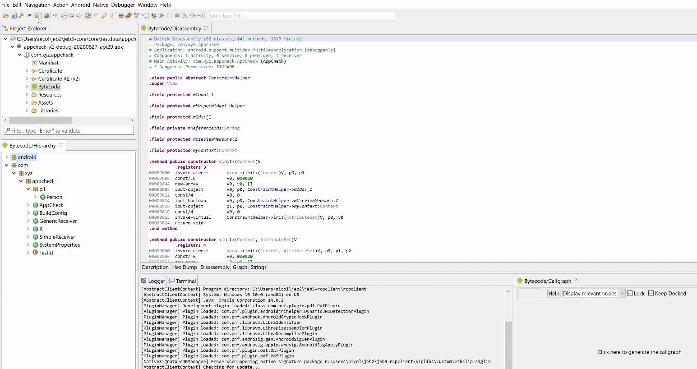

All plugins can issue sticky notifications that will be saved in the project (as opposed to pure log messages, which are not persisted). The notifications dialog can be opened from the toolbar or File menu. Double-click an entry or click Navigate to jump to the appropriate unit document and address (if the notification has an address attached to it).
